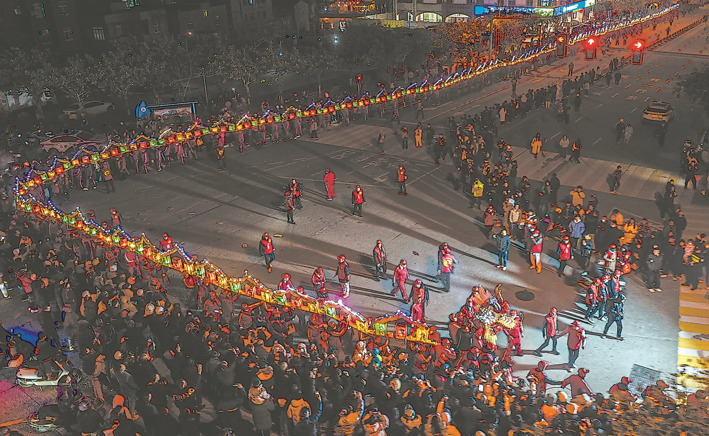

中文原文
www.fjsen.com 2025-02-15 08:43:55 张哲昊 刘宇捷 来源：福建日报
13日晚8时许，平潭老城关万人空巷、热闹非凡。锣鼓阵阵、烟火璀璨、灯牌夺目……一场盛大的平潭（首届）右营灯牌蛇非遗民俗文化踩街活动正在举行，此外还有舞龙、十番锣鼓、彩灯等方阵，踩街队伍长达800多米，场面蔚为壮观。
记者在现场看到，一条绵长的灯牌蛇队伍穿行于街道中，“蛇头”双眼炯炯有神，胡须飘逸灵动，再配上五彩装饰灯，一时间流光四溢，煞是好看，更引来大量市民游客驻足拍照，喝彩声此起彼伏。
据此次活动策划人陈志文介绍，这是平潭时隔10年再次举办灯牌蛇踩街活动，板凳节数从以前的51节增加至117节，“蛇身”长度近260米，由近300名表演者轮流协作完成，活动规模创历史之最。
平潭灯牌蛇历史悠久，是当地传统节庆的民俗文化项目之一，于2021年入选实验区第六批区级非物质文化遗产代表性项目名录。相传，灯牌蛇起源于明朝嘉靖年间戚继光入闽抗倭，起初是为了以灯牌行进震慑倭寇，因舞动时如长蛇蜿蜒而得名，后来逐渐演化为祈求新年风调雨顺、纳祥转运的民俗表演。
“灯牌蛇的‘蛇头’酷似龙头，是以竹篾精心编制成型，外部用布料仔细粘贴包裹，再不断完善‘蛇’的眼睛、胡须等细节，最后挂上五彩斑斓的LED彩灯，威风凛凛的‘蛇头’便大功告成。”灯牌蛇区级代表性传承人林亮说。
仔细看，灯牌蛇的“蛇身”由许多木板凳依次连接而成。每一条板凳上都安置了三盏灯箱，外形酷似骨牌，灯罩正面绘着《水浒传》《三国演义》的人物等，灯罩侧面写着各式各样的吉祥祝福，满含美好寓意，透明箱体内部则点有一盏装饰灯。
看着此次活动盛况空前，林亮甚是欣慰。“我们计划每年常态化举办灯牌蛇文化节，向更多人展示灯牌蛇的制作过程，还计划推出一系列相关的文创产品，打造一张全新的文旅名片。”他说。
English translation
Feb. 15, 2025, 08:43:55 | By Zhang Zhehao, Liu Yujie | Source: Fujian Daily
At around 8 p.m. on the 13th, Pingtan’s old town center was emptied of residents as crowds flocked to the streets, creating a lively atmosphere. The air resonated with the rhythm of gongs and drums, while fireworks illuminated the sky and lanterns dazzled the eyes—a grand Lantern Snake Intangible Cultural Heritage (ICH) Folk Street Parade was underway. In addition to the Lantern Snake, the parade featured dragon dances, Shifan Gongs and Drums, and colorful lantern displays. Stretching over 800 meters, the procession presented a spectacular sight.
On the scene, a long Lantern Snake procession wound its way through the streets. Its “snake head,” which looks much like a dragon’s head, had bright, lively eyes and flowing “whiskers,” decorated with colorful lights that glowed brightly. The stunning sight drew crowds of local residents and tourists, who stopped to take photos and cheered continuously.
Chen Zhiwen, the event planner, revealed that this marked Pingtan’s first Lantern Snake parade in a decade. “The number of bench sections, a traditional unit for linking the snake’s body, has increased from 51 to 117, extending the ‘snake body’ to nearly 260 meters. Operated by nearly 300 performers in shifts, this is the largest-scale event of its kind in history,” he stated.
With a long history, the Pingtan Lantern Snake is one of the local traditional folk culture activities for festivals. In 2021, it was listed as a district-level ICH item in Pingtan Comprehensive Experimental Zone. Legend has it that it originated during the Jiajing period of the Ming Dynasty (1522–1566), when General Qi Jiguang led troops to Fujian to fight against Japanese pirates. At first, the lantern parade was used to intimidate the pirates; it got its name because it moves like a winding snake. Later, it gradually evolved into a folk performance to pray for good weather, prosperity and good luck in the new year.
Lin Liang, the district-level inheritor of the Lantern Snake, explained its production: “The dragon-like ‘snake head’ is carefully woven with bamboo strips, covered with cloth, and then detailed with eyes and whiskers. Finally, colorful LED lights are hung on it, and the majestic ‘snake head’ is finished.”
Upon closer look, the “snake body” is made by connecting many wooden benches in a row. Each bench has three lantern boxes, shaped like traditional Chinese dominoes. The front of the lanterns is painted with characters from two classic Chinese novels Water Margin and Romance of the Three Kingdoms, and the sides are written with various auspicious blessings full of good wishes. A decorative light is placed inside each transparent box.
Seeing the unprecedented grandeur of the event, Lin Liang felt very pleased. “We plan to hold the Lantern Snake Cultural Festival regularly every year to show more people how the Lantern Snake is made. We also plan to launch a series of related cultural and creative products to make it a new cultural and tourism symbol of Pingtan,” he said.